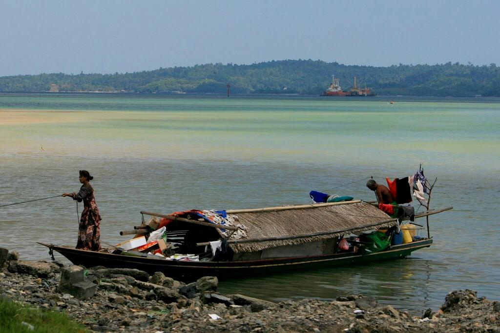
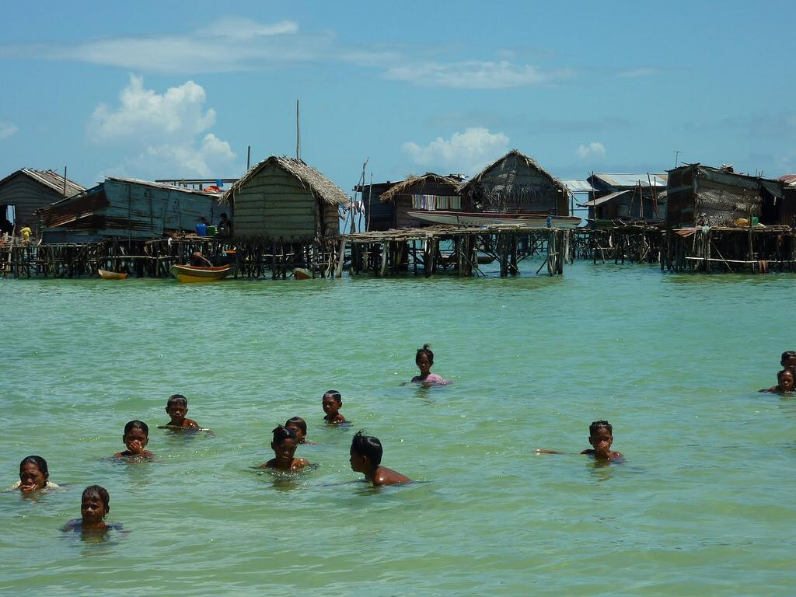

شعب الباجاو أو شعب ساما باجاو

هو شعب يعيش في منطقة سواحل جنوب شرق آسيا، تحديدًا منطقة ارخبيل سولو التابع لدولة الفلبين، وجزيرة بورنيو
ومجموعة جزر مينداناو، مما يجعل شعب الباجاو مشتتًا سياسيًا بين أندونيسيا والفلبين وماليزيا. يتميزون بمعيشتهم في
المياه على متن بعض
الزوارق الخشبية البسيطة والبيوت المقامة فوق سيقان خشبية عالية، فأُطلق عليهم لقب "غجر البحر" أو "بدو البحر"، لا
يعرف شعب الباجاو النقود ويعيشون على مقايضة الأسماك والسلع الزراعية. واليوم تتناقص أعداد الأفراد الذين يولدون
ويعيشون في الماء
كأسلافهم بسبب الاندماج الثقافي مع الشعوب المجاورة وجهود البرامج الحكومية الماليزية لضم وتوطين شعب الباجاو.
تاريخ اكتشافهم
تم اكتشاف وتسجيل وجودهم بواسطة المستكشف والرحالة الإيطالي أنطونيو بيجافيتا عام 1521 والذي ذكر في كتاباته
اشتهار شعب الباجاو بالقرصنة وتجارة العبيد في فترة الاحتلال الأوروبي لآسيا.
تركيبة مجتمعاتهم
>
يعتبر شعب الباجاو شعبًا مضيافًا ومبهجًا ومسالم على الرغم من تواضع ظروف معيشته. ويصب كل اهتمام شعب الباجاو في
علاقتهم على الأخوة والمشاركة للحفاظ على التماسك الاجتماعي. كما أنهم لا يعرفون الطبقية ولا نظم الحكم ولا
الطائفية نظرًا لبساطة
البيئة من حولهم وقلة احتكاكهم بالشعوب التي تعيش على الأرض بما فيها من صراعات على تملك الأرض والموارد. وبسبب
طريقة الحياة الغريبة لشعب الباجاو فإن معظم الافراد غير متعلمين.
المعتقدات
يتداول أهل الباجاو أسطورة تحكي أنهم ينتمون لشعب كان يسكن اليابسة ويحكمهم ملك له ابنة ابتلعها البحر في عاصفة
شديدة, فأمر الملك شعبه بالبحث عن ابنته, فرحلوا إلى البحر باحثين عنها ولمّا فشلوا في العثور عليها قرروا البقاء
في البحر وعدم
العودة إلى اليابسة خوفًا من غضب الملك.
اللغة والديانة
يدين معظم شعب الباجاو بدين الإسلام على المنهج السني وتوجد أقليات تعتنق المسيحية البروتستانتية والكاثوليكية
بالإضافة غلى بعض الأديان والأعراف التقليدية, ويعد التمسك بالدين قيمة اجتماعية واخلاقية عالية, ومع ذلك لا توجد
مساجد أو دور عبادة
إسلامية على الشواطيء القريبة من مكان سكن شعب الباجاو. ويقوم شعب الباجاو بتقديم الصلاة حسب معتقدهم لبعض الأراوح
التي تسكن البحر والمعروفة في الإسلام بالجن.
ويتحدث شعب الباجاو أكثر من عشرة لغات أهمها هي اللغات الملايو بولينيزية وهي مجموعة من اللغات الأسترونيزية
ويتكلمها حوالي 385 مليون شخص ويستقرون في جنوب شرق آسيا و في المحيط الهادئ وبشكل أقل في آسيا و في مدغشقر , وهي
خليط من اللغات
السنسكريتية و العربية وألتي تأثرت بالديانات الهندوسية و البوذية وثم الإسلام